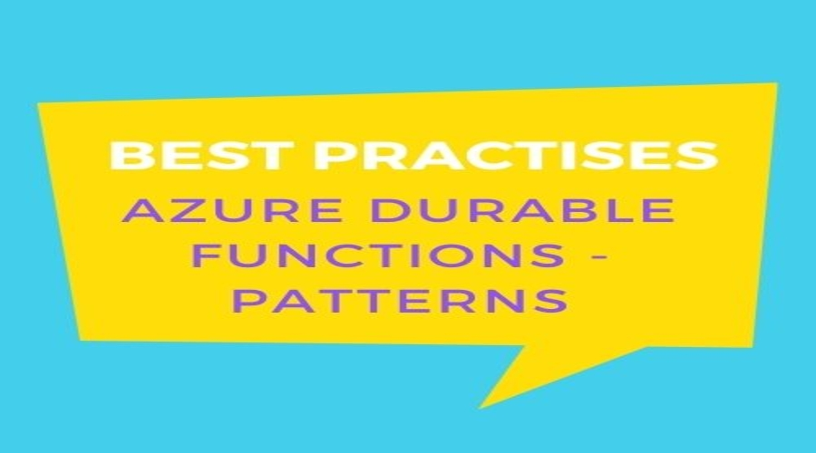
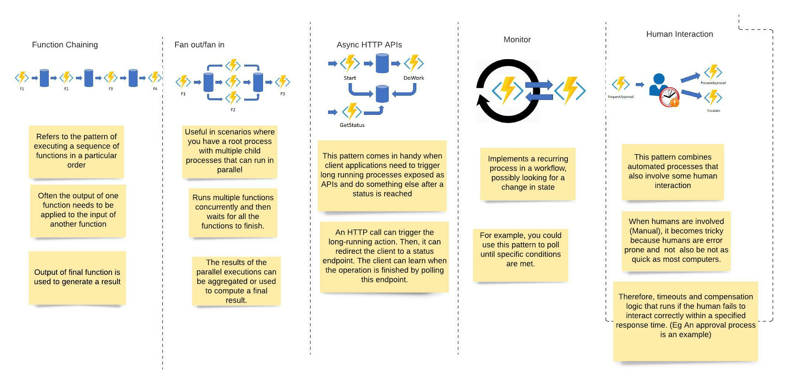

Patterns and Best Practises:Azure Durable Functions 21st July 2021

We have already discussed a quite a bit about Azure Durable
Functions. I did write up on bit of history and why we need Azure
Durable functions. You can read that article here..link below
Why do we need Azure Durable Functions and its history
I also wrote about
what are azure durable functions
We know that Durable Functions helps us simplify complex scearios where state management is required in serverless applications.In this article we will discuss about various application patterns.These kinds of functions can be used for the following patterns:
Chaining:
To chain a sequence of functions in a specific order;Fan-Out/Fan-In:
To execute one or more functions in parallel and based on the results you run some other tasks.Async HTTP APIs:
Usually implemented for long-running jobs;Monitoring:
To monitor processes or operations;Human interaction:
To create a process that needs manual intervention in order for the task to complete.I always like to depict the comparison as diagram as i guess it helps understand the difference better. Please find below the comaprison

I have already discussed Function Chaining approach in my previous
article. I used that approach to solve our hypothetical egample
complexity. Link to that article
what are azure durable functions
In Why do we need Azure Durable Functions and its history we also discussed about a scenario when we might have to run functions/actions parallely.For instance, what if we need to reconcoile outputs of each task. Say your manager wants to know how much the whole trip cost to the company. In this case, Book Bus action and Book accomodation action results need to be reconciled and then run a separate azure function may be called CostToCompany which will do reporting task.CostToCompany function may link to database and add it to say some expenses table.Or may be wil generate some report. It is upto you/CostToCompany task what you want to do with the expenses received.To solve these kind of problems we need Sub-orchestrators.Sub-orchestrators/child orchestratos are called by "parent" orchestrator. Parent calls the chold orchestrator using context.CallSubOrchestratorAsync method:
[FunctionName("MyParallelWorkFlow")]
public static async Task Sequential([OrchestrationTrigger] DurableOrchestrationContext context)
{
//Any other actions go here
var reserveBus = context.CallSubOrchestratorAsync("ReserveBus", bookBus);
var bookAccomodation = context.CallSubOrchestratorAsync("BookAccomodation", bookAccomodation);
var expenses= await Task.WhenAll(reserveBus, bookAccomodation);
await context.CallActivityAsync("CostToCompany", expenses);
}
Task.WhenAll returns an array of results (one result per each input task).This array of result is then passed on to the reporting activity.
Now the interesting part is Billing.Azure Functions on the serverless consumption-based plan are billed per execution + per duration of execution.One thing to notes with orchestration is that what it orchestreates usaauly isasynchronous which means we don't know exactly when something finishes.So that you dont pay the runing csts for it, durable functions powers down and saves the state.
When an orhcstration functoins is given more work to do, for eg say a response message is recieved, the orchestrator wakes up and and re-executes the entire function .It always starts with the first line and means that the same line is executed multiple times.Ofcourse its not dumb to restart everything from sctarch.It stores the hstry of the past executuins in Azure Storage,so the effect of second pass or every subseqeunt pass of the first line is different. During the replay,if code ties to call a function, then Durable Task frameowkrs internally checks exucetion hisoty of current orchestration If it finds that activity function has already exiected and yieled a resilt,it replays the funciton's reuslt and the orchestrator code continues to run.
Because of these “replays”, the orchestrator’s implementation has to be deterministic: don’t use DateTime.Now, random numbers or multi-thread operations; more details here.The whole behavious of orcehstraot is like stop-resume behaoir
Error handling

Now in the previous artilce we also discussed about the possibility of errors, like what if third pary bus reserving application is down.Then our application need to handle the error gracefully or even run some compesnating logic, for instance roll back the whole workflow or book a cab may be. Instead of silently failing,activity function, in tis case booking bus functoin sends a message contiantoin information about error back to the orchestarot. Orchestraor dersealised the error detial, and at the time of replays throws a .NET epection. The developer can handle the expcetion using a try..catch block around the call and decide what to do.For eg.
[FunctionName("MyworkflowWithCompensatingLogic")]
public static async Task Sequential([OrchestrationTrigger] DurableOrchestrationContext context)
{
var symposium = await context.CallActivityAsync("BookTechSymposium", "Trip");
try{
var travelViaBus = await context.CallActivityAsync("ReserveBus", symposium.Response.Dates);
}catch(Exception){
var travelViaCab= await context.CallActivityAsync("BookCab", symposium.Response.Dates);
}
await context.CallActivityAsync("BookAccomodation", travel.Response.Dates);
}
You can even apply a automatic retry policy.All you need to use is RetryOptions.Below code asks the library to:
- Retry upto 3 times
- Wait for 1 minute before the first retry
- If error is not intermittient, there is no point retying immediatly. We can configure client to retry the request periodically with increased delays between requests. Here we have Backoff coefficient as 2 which means delays increase y factor of 2. i.e first one happens in 1 min, sec one after 2 .thired adrer 4 mins and so on etc.)
[FunctionName("MyworkflowWithRetry")]
public static async Task Sequential([OrchestrationTrigger] DurableOrchestrationContext context)
{
var symposium = await context.CallActivityAsync("BookTechSymposium", "Trip");
var myRetryOptions= new RetryOptions(
firstRetryInterval: TimeSpan.FromMinutes(1),
maxNumberOfAttempts: 3);
myRetryOptions.BackoffCoefficient = 2.0;
var travelViaBus = await context.CallActivityAsync("ReserveBus",myRetryOptions, symposium.Response.Dates);
await context.CallActivityAsync("BookAccomodation", travel.Response.Dates);
}
Conclusion.
To conclude,I hope you would have got better hold on Azure Durable
functions. I have written a separate article comparing Azure
Durable Functions with logic apps. Link here
There is another article where I have mentioned various
application patterns that can benefit from Azure Durable functions
What is API-Schema
Email me at "techspacedeck@gmail.com" incase you have queries. Alternatively, you can fill the "CONTACT" form or drop a comment below